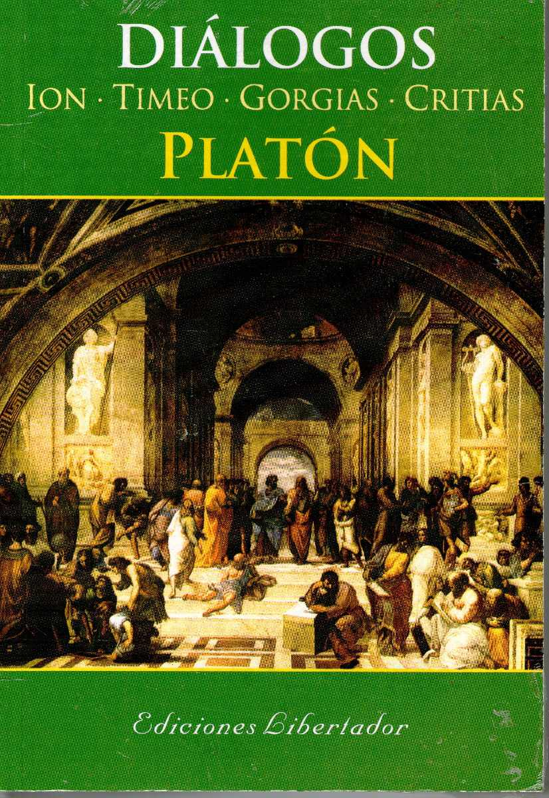

|

Portada del libro "Los dialogos de Platon" |
¿CUÁNDO FUE LA PRIMERA VEZ QUE SE HABLÓ DE LA ATLÁNTIDA?
Las fuentes del relato de la Atlántida son el Timeo y el Critias, diálogos escritos por el filósofo griego Platón. En ellos, Critias, discípulo de Sócrates, cuenta una historia que de niño escuchó de su abuelo y que éste, a su vez, supo de Solón, el venerado legislador ateniense, a quien se la habían contado sacerdotes egipcios en Sais, ciudad del delta del Nilo. La historia, que Critias afirma verdadera, se remonta en el tiempo a nueve mil años antes de la época de Solón, para narrar cómo los atenienses detuvieron el avance del imperio de los atlantes, belicosos habitantes de una gran isla llamada Atlántida, situada más allá de las Columnas de Hércules, que desapareció en el mar a causa de una violenta catástrofe y un gran diluvio tras la victoria ateniense. |
|---|
En el Renacimiento, la leyenda fue recuperada por los humanistas, quienes la consideran a veces como vestigio de una sabiduría geográfica olvidada, pero también como símbolo de un porvenir utópico. El escritor mexicano Alfonso Reyes Ochoa afirma que la Atlántida, así resucitada por los humanistas, trabajó por el descubrimiento de América. Francisco López de Gómara en su Historia General de las Indias, de 1552, afirma que Colón pudo haber estado influido por la leyenda atlántida y ve en voz náhuatl atl (agua) un indicio de vínculo entre aztecas y atlantes. Durante los siglos xvi y xvii, varias islas (Azores, Canarias, Antillas, etc.) figuraron en los mapas como restos del continente perdido. En 1626, el filósofo inglés Francis Bacon publicó La Nueva Atlántida (The New Atlantis), utopía en pro de un mundo basado en los principios de la razón y el progreso científico y técnico. En España, en 1673, el cronista José Pellicer de Ossau identifica la Atlántida con la península ibérica, asociando a los atlantes con los misteriosos tartesios.
Las conjeturas que postulaban la existencia de la Atlántida como el «continente perdido» fueron invalidadas por la comprobación del fenómeno de la deriva continental durante los años 1950. Por ello, algunas de las hipótesis modernas proponen que algunos de los elementos de la historia de Platón se derivan de mitos anteriores o se refieren a lugares ya conocidos.
 Ir Arriba
Ir Arriba